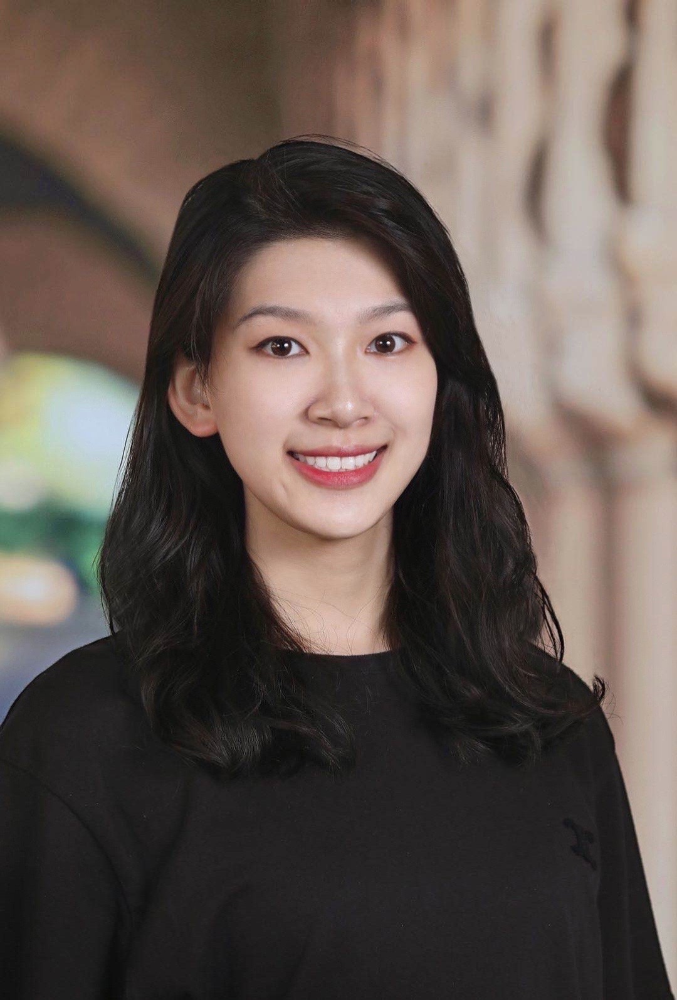

I am a second year Education Data Science Master student at Stanford Graduate School of Education. I am fortunate to have professors Phil Fisher, Nick Haber, Roy Pea, and Mark Warschauer as my advisors. My research focuses on the use of computer vision and artificial intelligence to promote positive parent-child interactions (Project: Filming Interactions to Nurture Development). Additionally, I am interested in using innovative technologies, such as large language models, to enhance STEM learning (Project: MathyAI) and improve the well-being of caregivers. My ultimate goal is to empower young learners to reach their full potential and improve their lives through learning.
Before joining Stanford, I received my bachelor's degree with a double major in Pure Mathematics and Communication & Media from the University of Michigan, Ann Arbor. I worked on Michigan early childhood policy analysis in the Education Policy Initiative (PI: Professor Brian Jacob and Professor Gloria Yeomans-Maldonado), gameful learning analysis of GradeCraft (PI: Professor Barry Fishman) and Google image search algorithm biases analysis in the Center for Ethics, Society and Computing (PI: Professor Christian Sandvig).